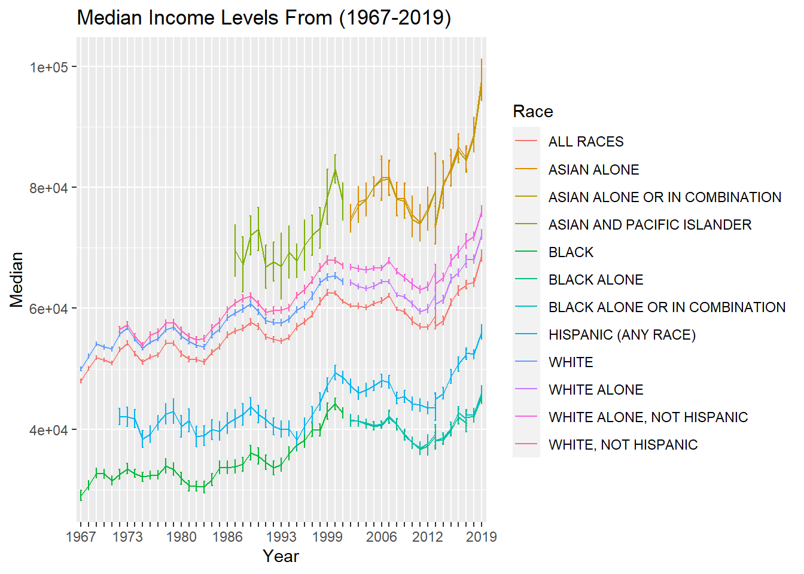

library(tidyverse)
library(ggplot2)
library(dplyr)
library(readxl)
library(summarytools)
library(usmap)
library(tigris)Error in library(tigris): there is no package called 'tigris'knitr::opts_chunk$set(echo = TRUE, warning=FALSE, message=FALSE)library(tidyverse)
library(ggplot2)
library(dplyr)
library(readxl)
library(summarytools)
library(usmap)
library(tigris)Error in library(tigris): there is no package called 'tigris'knitr::opts_chunk$set(echo = TRUE, warning=FALSE, message=FALSE)Today’s challenge is to:
R Graph Gallery is a good starting point for thinking about what information is conveyed in standard graph types, and includes example R code.
(be sure to only include the category tags for the data you use!)
dataset <- data.frame()
file_name <- "_data/USA Households by Total Money Income, Race, and Hispanic Origin of Householder 1967 to 2019.xlsx"
cnames <- read_excel(file_name, sheet = 1, skip = 4, n_max = 0) %>% names()
cnames[2:9] <- gsub('[\r\nto\r\n]+', '-',cnames[2:9])
cnames <- c("Year","Number_thousands","Total",cnames[2:10],"Median","Error_of_Median","Mean","Error_of_Mean")
dataset <- read_excel(file_name, sheet = 1, skip = 5,col_names = cnames)Each Demographic in the data set is sepereated in sections and lists all the years recorded for that demographic from 1967 to 2019. For each row each income level is recorded as a percentage of the total number and the mean and median for that year is also recorded along with their respective errors
The sets of data which are seperated by demographic need to have a dedicated column which will have the demographic of that recording as its value. These lines are blank aside from labeling the demographic in the first column so you can collect and mark which rows belong to which demographic. The extra lines of information explaining the table at the need to be removed.
race_name_rows <- which(is.na(dataset$Total))
race_name_rows <- race_name_rows[1:13]
race_names <- c()
for (x in dataset[race_name_rows,1]){
x <- gsub('[0-9]+', '', x)
race_names <- c(race_names,x)
}
race_values=c(NA)
index<-1
num_rows<-0
for (x in race_names){
if (index>12) {break}
num_rows<- race_name_rows[index+1]-race_name_rows[index]
for (y in 1:num_rows){
race_values <- c(race_values,x)}
index <- index + 1
}
dataset$"Mean" <- as.numeric(as.character(dataset$"Mean"))
dataset$"Median" <- as.numeric(as.character(dataset$"Median"))
dataset$"Error_of_Median" <- as.numeric(as.character(dataset$"Error_of_Median"))
dataset$"Error_of_Mean" <- as.numeric(as.character(dataset$"Error_of_Mean"))
dataset <- dataset[-c(354:383),]
dataset$Race <- race_values
dataset <- dataset[-which(is.na(dataset$Total)),]
dataset <- dataset %>% select(-"Total")
dataset <- dataset %>% separate(Year, c('Year', 'Year2'))
dataset <- dataset %>% select(-Year2)For the data to be tidy it needs to be separated into each observation and the mean and median would need to repeated for each observation of income level which is extraneous. This data is still useful so it is separated into its own table.
medians_means <- dataset %>% select("Year","Race","Mean","Error_of_Mean","Median","Error_of_Median")
dataset <- dataset %>% select(-"Mean",-"Error_of_Mean",-"Median",-"Error_of_Median")
dataset <- dataset %>%
pivot_longer(
cols=cnames[4:12],
names_to = "income_level",
values_to = "percent",
values_drop_na = TRUE
)
dataset$Number_thousands <- as.numeric(as.character(dataset$Number_thousands ))
dataset$percent <- as.numeric(as.character(dataset$percent))
dataset$Number_thousands <- dataset$Number_thousands * dataset$percent/100
dataset <- dataset %>% select(-percent)
dataset$Number_thousands <- dataset$Number_thousands %>% replace_na(0)#options(repr.plot.width = 20, repr.plot.height =20)
ggplot(medians_means, aes(x = Year, y = Mean,ymin = Mean-Error_of_Mean, ymax = Mean+Error_of_Mean, group=Race, color=Race)) + geom_errorbar(width = 0.2) + geom_line() + scale_x_discrete(guide = guide_axis(check.overlap = TRUE))+ggtitle("Mean Income Levels From (1967-2019)")
ggplot(medians_means, aes(x = Year, y = Median,ymin = Median-Error_of_Median, ymax = Median+Error_of_Median, group=Race, color=Race)) + geom_errorbar(width = 0.2) + geom_line() + scale_x_discrete(guide = guide_axis(check.overlap = TRUE))+ggtitle("Median Income Levels From (1967-2019)")
only_race_income <- dataset %>% select(-Year)
invisible(only_race_income %>% group_by(Race,income_level) %>% summarise(across(Number_thousands, sum)))
only_race_income$income_level = factor(only_race_income$income_level, levels = rev(cnames[4:12]))
ggplot(only_race_income, aes(fill=Race, y=income_level, x=Number_thousands)) + geom_bar(position="dodge", stat="identity")+ ggtitle("Total Number Of Demographic Per Income Bracket From (1967-2019)")
dataset <- data.frame()
file_name <- "_data/StateCounty2012.xls"
dataset <- read_excel(file_name, skip = 2)
dataset <- dataset %>% select(-"...2",-"...4")
dataset <- as.data.frame(dataset)
dataset <- dataset %>% rename("state" = "STATE","counties"="COUNTY","Total"="TOTAL")The second set of data I worked with was the 2012 numbers for railroad employment. The lists all of the counties and districts which there are people employed by the railroad.
In order to graph this data some data needs to be stripped such as the totals in Canada as well as military bases which cannot be shown in a heat map of america. All of the state totals are aggrogate data and do not need to be included for this data set.
dataset <- dataset[-which(is.na(dataset$counties), arr.ind=TRUE),]
dataset <- dataset[which(dataset$state!='AE'),]
dataset <- dataset[which(dataset$state!='AP'),]
data_states <- dataset %>% group_by(state) %>% summarise(across("Total", sum))The usa map package to display county information need to have a specific code known as fips since many Counties have the same name. Using the tigris package I could use the state name and county name to query the fips code and then add that info to the table. Unfortunately 30 of the items in this table were formatted differently or spelled differently from the fips record and I had to add them in manually
data_county <- dataset
get_fips <- function(X,Y){
ding <- lookup_code(state = X, county = Y)
lister <- str_split(ding,"'")
outie <- paste(lister[[1]][[2]],lister[[1]][[4]], sep = "")
}
fips_val=c()
for(i in 1:nrow(dataset)) {
fips_val <- c(fips_val,get_fips(dataset[i,1],dataset[i,2]))
}Error in lookup_code(state = X, county = Y): could not find function "lookup_code"data_county$fips <- fips_val
data_county_bad <- data_county[which(data_county$fips=="", arr.ind=TRUE),]
data_county <- data_county[-which(data_county$fips=="", arr.ind=TRUE),]
fips_val2 <- c(01115,05123,11001,12109,12111,17043,17099,17163,18091,18141,22087,22089,22093,22095,22097,22099,22101,22103,24510,24033,24035,24037,26147,26149,27137,29510,29186,29183,29185,29187,29189,32510,36089,51760,55109)
data_county_bad$fips <- fips_val2Error in `$<-.data.frame`(`*tmp*`, fips, value = c(1115, 5123, 11001, : replacement has 35 rows, data has 0data_county <- rbind(data_county, data_county_bad)plot_usmap(regions = "counties",data = data_county, values = "Total", color = NA) +
scale_fill_continuous(low = "white", high = "blue",name = "Total",na.value = 'white', label = scales::comma) +
theme(plot.background = element_rect(fill = "grey"),panel.background = element_rect(color=NA, fill = "grey"),legend.position = "right")
plot_usmap(data = data_states, values = "Total") +
scale_fill_continuous(low = "white", high = "blue",name = "Total", label = scales::comma) +
theme(plot.background = element_rect(fill = "grey"),panel.background = element_rect(color=NA, fill = "grey"),legend.position = "right")